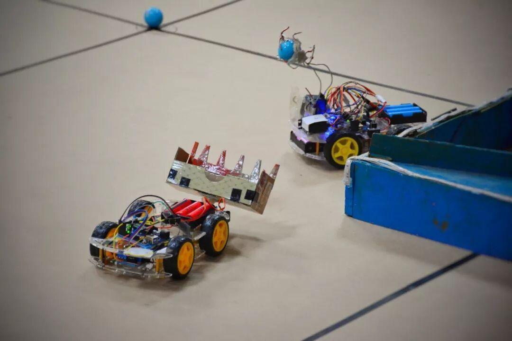
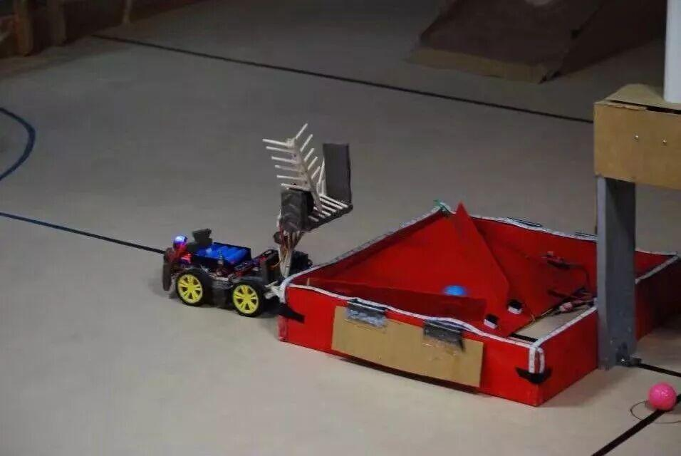

什么！这是他们第四次.....
许多人的大学是这样的：
民以食为天，学以乐为先。
But......
我们的大学生活不是幻想,不是妄想,而是让我们的心动&行动的理想!除了吃喝玩乐睡回梦醒，我们是不是该有个小目标？比如：
做个搞机中的王者？
加满综测学分？
拿个奖学金为明年双十一做准备？
What？觉得有点难？Don't be worry!
这里有惊喜！
▼
第四届理工杯机器人大赛
MINERALMASTER2018
比赛主题：矿石运输
（MineralMaster，以下检测MIM)
比赛时间：2018年12月1日
2018年12月2日
比赛地点：文体中心

是的，我们第四次理工杯机器人大赛开始啦！注意：
想搞机的朋友，带着你的搞机梦，
你们帅气的学长就在这里等你！
不想搞机的朋友，带着你的优秀梦，
你们优秀的学长手把手教你！
话不多说，让我们一起看看能带你飞的赛事信息：

1、竞赛面向沈阳理工大学全体在校社团成员。
2、每组参赛队伍人数3-5人，且每名学生只允许参加一支队伍。

报名时间：11月14日8：00
-11月20日20：00
报名地点：文体中心210
试场时间：11月 25日8：00
试场地点：文体中心三楼
竞赛时间：12月1日8：00
-12月2日20：00
竞赛地点：文体中心三楼
（一）作品初步检查和试场
对于作品是否符合竞技要求进行初步检查，对于检查合格的作品进行抽签，抽签后可以进行作品试场。
（二）小组赛
小组赛期间，每两支队伍之间连续进行两场比赛，两场比赛之间有1分钟的准备时间；第二场比赛，红蓝方不变；若比赛结果为2:0，则胜方积3分，负方为0分；若比赛结果为1：1，则双方各积1分。
（2）确定小组赛排名：
①每组按积分排名，排名靠前的队伍名次靠前；
②若出现积分相同的情况，则比较积分相同的队伍各场比赛累积的净胜分，分数高的队伍名次靠前；
③若出现积分相同且净胜分相同的情况，则自动机器人重量轻的队伍名次靠前。
（三）淘汰赛
淘汰赛采用一场决胜负的赛制。
怎样？来吧！搞机骚年！
王者的宝座正对你以身相许！
来吧！亲爱的同学！
综测的满分在向你招手！
来吧来吧！
第四次理工杯！
学姐学长在这里等你的加入！
编辑：张诗梦


MINERALMASTER
有趣的灵魂在等你长按扫码可关注